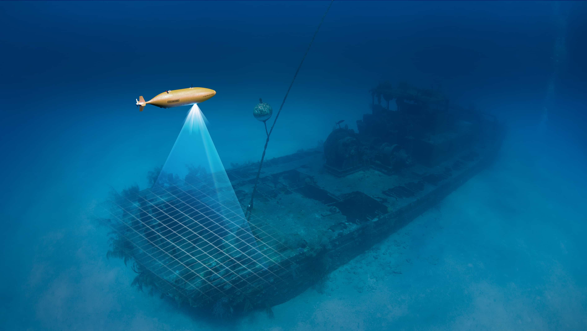
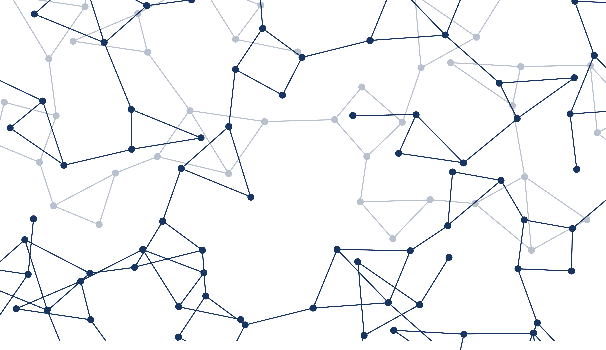

Enes Demirağ
github
linkedin
Blogs

Underwater 3D Vision
There are variety of sensors types for measuring distances. It is possible to measure distances using infra-red light, radio waves, lasers etc.
25 Nov. 2018
Eng

Yapay Sinir Ağları
Makineler düşünebilir mi? Ünlü bilgisayar bilimcisi Alan Turing’in 1950 yılında “Computing Machinery and Intelligence” isimli makalesinde...
15 Sep. 2019
Tr